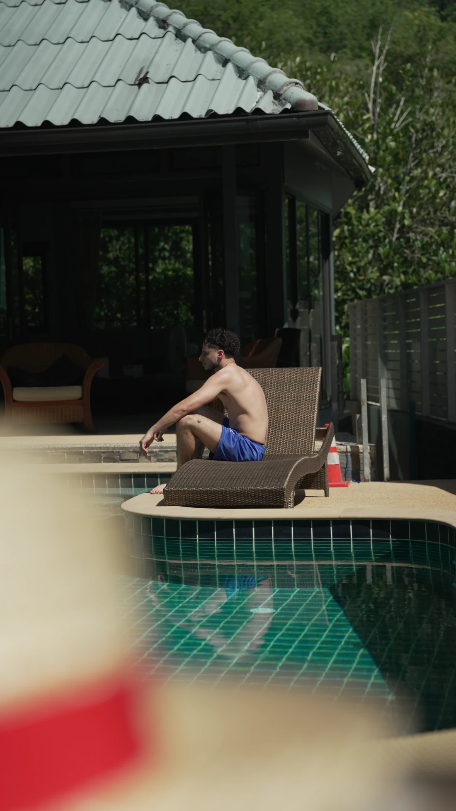

Virgil Boukraa
Freelance en stratégie de communication, création de contenus & direction artistique
Je ne cherche pas à être le plus talentueux.
J'essaie simplement d'être celui qui continue lorsque les autres s'arrêtent.
La boxe m'a appris qu'un combat se prépare bien avant de monter sur le ring. Observer, comprendre, rester discipliné et savoir frapper au bon moment.
Aujourd'hui, j'aborde chaque projet avec ce même état d'esprit.

Qui suis-je ?
Depuis mon plus jeune âge, l'entrepreneuriat est un objectif qui brûle en moi.
Pourquoi vouloir entreprendre ? Parce que l'idée de concevoir quelque chose à partir de mes propres idées, de mes pensées et de ma vision a toujours eu du sens pour moi. Je ne voulais pas simplement travailler pour les idées d'un autre, mais apprendre à construire les miennes.
Mais avant de vouloir, il faut faire.
C'est dans cette logique que j'ai commencé mes études en économie et gestion. À mes débuts, je ne savais pas encore réellement dans quel domaine me spécialiser. J'ai donc choisi une formation généraliste, avec l'idée d'acquérir des connaissances suffisamment larges pour comprendre les différentes dimensions nécessaires à la création et au développement d'une entreprise.
En parallèle de mes études, j'ai travaillé comme commercial au sein d'une agence. Ma mission consistait notamment à démarcher des personnes en porte-à-porte pour leur présenter et leur vendre un produit qu'elles n'avaient, à l'origine, pas prévu d'acheter. Une expérience exigeante qui m'a forgé et m'a permis de développer de véritables compétences commerciales.
Comme j'aime le dire : « Pour entreprendre, il faut savoir vendre son bien ou son service. »
J'ai ensuite décidé de me spécialiser dans la communication digitale, toujours avec cette même idée en tête : comprendre comment vendre un produit, un service ou une idée, mais cette fois-ci à travers le digital. C'est ainsi que je me suis retrouvé à étudier pendant trois ans la communication et le marketing digital, jusqu'à l'obtention de mon Mastère en Stratégie Marketing et Communication Digitale.
Après toutes ces années à apprendre, expérimenter et construire progressivement ma vision, il était temps pour moi de faire mes premiers pas dans l'entrepreneuriat.
C'est comme cela qu'est né Vagabon.
Un projet né des pensées et de la volonté d'un jeune garçon qui voulait créer quelque chose à son image, apporter sa pierre à l'édifice et, aujourd'hui, mettre son expertise, sa créativité et sa vision au service de ses futurs clients.
Vagabon représente finalement la continuité de ce parcours : transformer des idées en projets concrets et aider d'autres personnes à donner vie aux leurs.
Mes valeurs
Autonomie
Chercher, comprendre, créer.
J'ai toujours aimé apprendre par moi-même. Chercher une solution, expérimenter, recommencer jusqu'à comprendre fait partie de ma manière de fonctionner. Cette autonomie nourrit aujourd'hui ma créativité et me pousse continuellement à développer de nouvelles compétences. Je préfère ne pas attendre de savoir faire : j'apprends à faire.
Persévérance
Continuer, même lorsque le résultat n'est pas immédiat.
Mes études, le sport et mes expériences professionnelles m'ont appris une chose essentielle : la progression vient rarement sans difficulté. J'ai connu l'échec, le doute et le refus, mais j'ai surtout appris à continuer. Pour moi, la difficulté n'est pas une finalité : c'est souvent là que commence la progression.
Curiosité
Ne jamais arrêter d'apprendre.
J'aime comprendre comment les choses fonctionnent, découvrir de nouveaux outils, de nouvelles cultures et de nouvelles manières de créer. Cette curiosité dépasse largement mon métier. Elle influence ma façon d'observer le monde et, forcément, ma manière de communiquer et de concevoir mes projets. Chaque nouvelle compétence devient une possibilité supplémentaire de créer autrement.
Ambition
Construire plutôt que simplement suivre.
Depuis longtemps, j'ai cette envie d'entreprendre et de construire quelque chose à partir de mes propres idées. Mon ambition ne se résume pas à la réussite professionnelle : elle est profondément liée à la liberté de créer, de choisir mes projets, d'évoluer et de construire une vie qui me ressemble. Vagabon est aujourd'hui une première concrétisation de cette volonté.
Ma manière d'aborder la communication et la création
Ce que j'aime avant tout dans la communication, c'est la difficulté, aujourd'hui, de réussir à créer un contenu réellement différenciant. Nous sommes confrontés à longueur de journée à des publicités, des publications, des vidéos et toutes sortes de contenus. Et, la plupart du temps, ça nous saoule — moi le premier d'ailleurs.
Et c'est justement là que, selon moi, la communication devient un art : réussir à toucher son public cible avec un contenu qui se différencie de la masse, qui attire l'attention et qui donne une raison de s'y intéresser.
La création est probablement l'une des choses les plus difficiles à juger, puisque chacun possède sa propre perception de ce qui est beau, intéressant ou impactant. C'est un peu comme l'art : face à un même tableau, deux personnes peuvent ressentir des choses complètement différentes. Et c'est précisément cette difficulté qui m'intéresse.
J'aime chercher à comprendre ce qui peut toucher un public, l'intéresser ou le sensibiliser à un sujet. Pour moi, créer ne consiste donc pas simplement à produire quelque chose de beau. C'est aussi chercher à comprendre psychologiquement sa cible afin d'imaginer un contenu, un visuel ou une vidéo capable de lui parler et de provoquer une réaction.
Mais ce qui m'intéresse encore davantage, c'est la stratégie. Parce qu'une bonne création sans véritable réflexion derrière elle peut rapidement perdre de son impact. La stratégie, c'est ce qui permet de donner une direction aux idées et, surtout, de comprendre comment se différencier des autres.
Chaque projet se construit en 4 rounds
Chaque projet commence bien avant la création d'un visuel ou d'une vidéo. Mon objectif est d'abord de comprendre votre activité, vos enjeux et les personnes que vous souhaitez toucher. Cette phase de réflexion permet de construire une stratégie solide avant de passer à la création.
-
Comprendre
Chaque collaboration débute par un échange. J'apprends à connaître votre activité, vos objectifs, votre positionnement ainsi que les problématiques auxquelles vous êtes confronté. Cette première étape est essentielle, car une bonne communication commence toujours par une bonne compréhension.
-
Construire la stratégie
À partir de nos échanges, j'élabore une stratégie de communication adaptée à vos besoins. Je construis un plan clair qui définit les objectifs, les messages, les supports à produire ainsi que la direction créative à suivre avant de commencer toute réalisation.
-
Créer et ajuster
Je réalise une première proposition. Selon le projet, je présente plusieurs pistes créatives ou plusieurs variantes afin d'obtenir votre retour. Cette étape d'échange permet d'affiner progressivement la création jusqu'à trouver la solution qui correspond réellement à vos attentes.
-
Livrer et accompagner
Une fois les derniers ajustements effectués, je livre les fichiers finaux dans les formats adaptés. Si le projet le nécessite, je reste disponible pour accompagner sa mise en ligne, son déploiement ou ses futures évolutions.